01 Business context
BigBattery LLC: a live ecommerce business where UX decisions directly affected revenue.
BigBattery LLC sells battery systems, energy storage solutions, and related technical products to
both individual consumers and commercial buyers. The product range is broad and technically complex — solar
batteries, lithium systems, inverters, and off-grid power setups — each with specifications that require
careful, clear communication to convert a visitor into a confident buyer.
The business runs on a dual B2B/B2C model. Commercial buyers (contractors, solar installers,
off-grid property owners) have entirely different decision frameworks than individual consumers.
Designing one experience that serves both without alienating either was the central product
design tension throughout my time at BigBattery.
This wasn't a greenfield redesign or a speculative concept. Every change I designed shipped to
real customers. Every friction point I identified was costing real conversions. Every component I built was
maintained by real developers. That production reality shaped every design decision.

BigBattery.com · Product Page · Live ecommerce environment serving B2B + B2C customers across 6 energy verticals
02 My role
Not just a designer. A product owner embedded in a live business operation.
At BigBattery, there was no separate product team, no design manager, no UX process to slot into.
I was the design function — working directly with the CEO and CTO to understand business priorities, and
translating those into product decisions that the development team could execute against a real roadmap.
That required operating across a much wider surface than typical UI design work.
UX Strategy
UI Design
Conversion Optimization
Design Systems
Responsive Design
UX Research
Front-End Thinking
Stakeholder Communication
B2B + B2C Strategy
SEO-Aligned UX
CMS Handoff
Information Architecture
I worked in rapid iteration cycles — a design decision made on Monday was
often in front of real customers by end of week. That compression forced a kind of discipline that extended
design processes don't build: the ability to identify the highest-leverage change, make it defensibly, and ship
it cleanly.
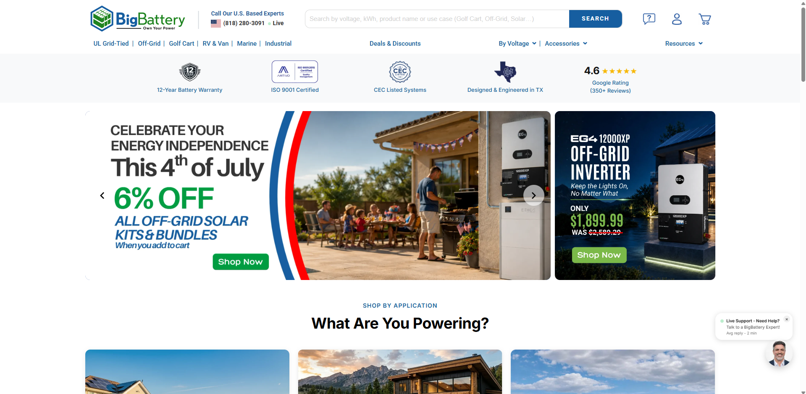
BigBattery.com · Homepage · Live ecommerce environment serving B2B + B2C customers across 6 energy verticals
03 The problem space
Strong products. A site that couldn't sell them.
BigBattery offers advanced energy storage solutions across multiple industries — residential, commercial, marine, RV, golf, and off-grid. The products were technically competitive. The website wasn't converting. Despite real traffic and genuine demand, the experience was creating friction at every stage — discovery, evaluation, and purchase.
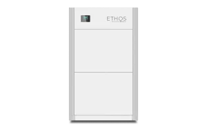
Residential · ETHOS Series
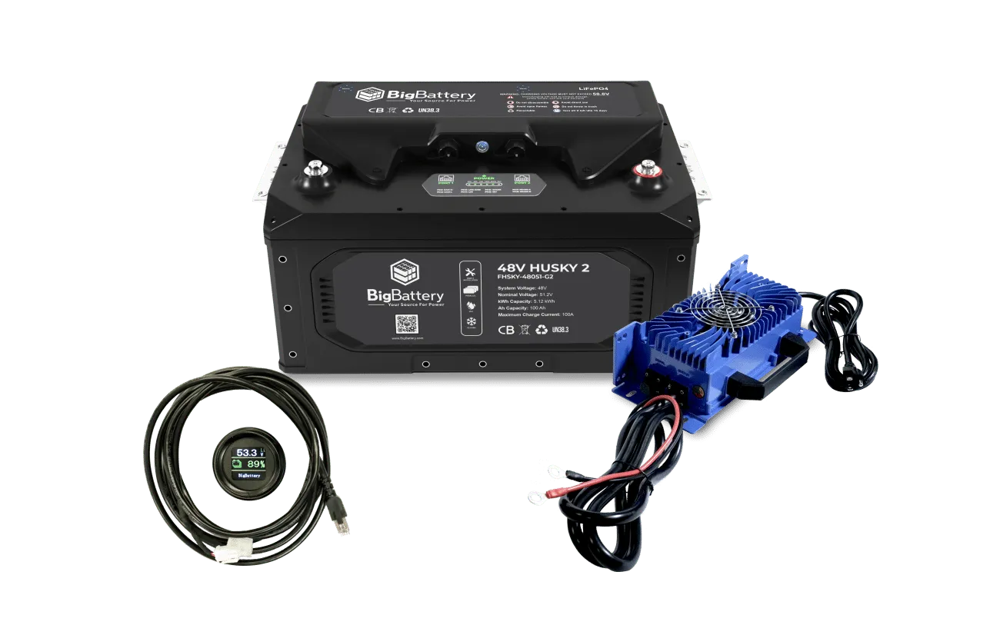
RV · HUSKY2 Series
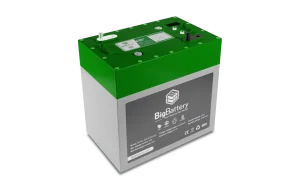
Golf · EAGLE Series
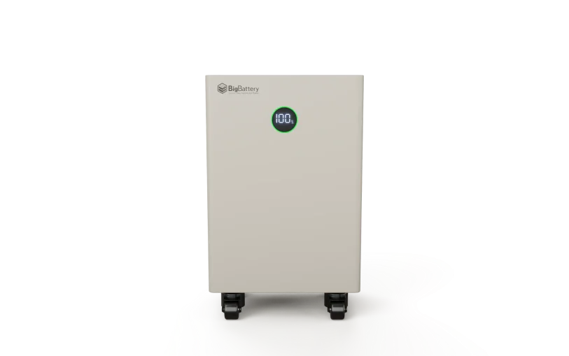
Off-Grid · NEXUS Series
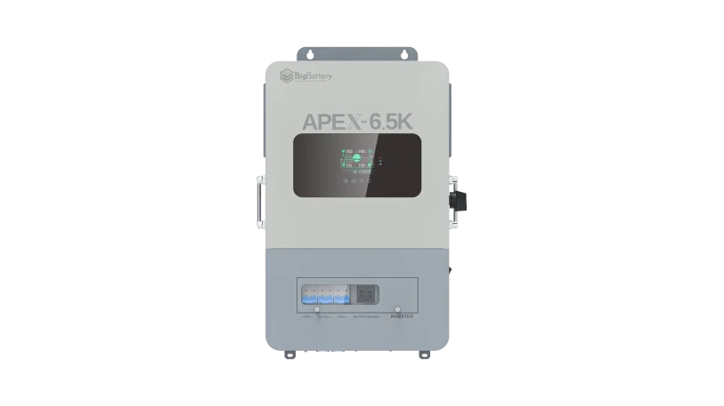
Off-Grid · APEX 6.5 Series
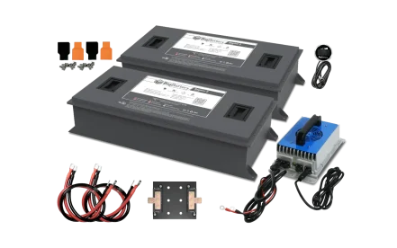
Commercial · RAPTOR2
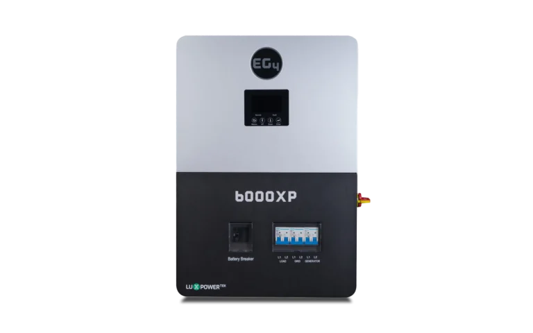
Off-grid · EG4 6000XP
The Problem
180+
Fragmented product pages
Confused users and search engines alike. Finding one product meant wading through dozens of near-identical listings.
↓↓
Technical complexity overwhelmed buyers
Non-expert buyers couldn't decode spec-heavy pages written for engineers. They left instead of asking.
70%
Checkout abandonment
Users who made it all the way to checkout were still dropping off. Friction at the final step was costing real revenue.
Why This Was a Business Risk
↓ Diluted SEO · less discoverability
180+ fragmented pages split search authority across near-duplicate listings. Google couldn't determine the most relevant page — and neither could users. Organic traffic was being actively harmed by the site's own structure.
↓ Poor UX directly impacted revenue
Users were abandoning after reaching product pages. Sales team calls confirmed it — customers who called were already frustrated. Every friction point between landing and checkout was a measurable revenue leak.
↓ Confusing page layout eroded trust
Inconsistent navigation, dense spec tables, and no clear visual hierarchy left users disoriented. A confused buyer isn't just a missed sale — they're a customer who tells others the site is hard to use.
↓ Scaling complexity hinders growth
As the product range expanded, the site became harder to manage, not easier. New variations were added as new pages — making the catalog exponentially more fragmented over time.
↓ Technical complexity overwhelmed users
Battery specs — voltage, amp-hours, cell chemistry, BMS ratings — are genuinely complex. Without a design layer that translated that complexity into decision-making clarity, most buyers simply couldn't self-serve.
↓ B2B vs B2C tension unresolved
Commercial buyers needed specification depth. Individual consumers needed simplified decision paths. One surface was trying to serve both — satisfying neither fully and creating a ceiling on growth in each segment.
Design Goals
🔍
Simplify product discovery
Rebuild navigation around how customers think — not how BigBattery organizes its internal catalog. Application-based entry points, guided filtering, clarity without losing richness.
⚡
Increase conversion by reducing checkout friction
Streamline the purchase path. Remove every unnecessary step between "I want this" and "I bought this." Surface trust signals exactly where buying confidence breaks down.
📐
Build a scalable UX system
Create a design system that grows with the product range — not one that breaks under it. Every new battery or inverter should slot into an existing pattern, not require a new page architecture.
🧠
Reduce confusion from technical complexity
Don't dumb it down — structure it better. Use progressive disclosure so specs are accessible to experts but not overwhelming to first-time buyers. Outcome-first, spec-second.
"The customers who call us are already confused by the website. They've read the specs but they don't know which battery is right for them. We're losing people before they even get to the point of asking."
Stakeholder feedback · CEO, BigBattery LLC
04 Research & discovery
Research happened in the real environment — not in a controlled setting.
At BigBattery, research wasn't a formal process with dedicated sprints. It was embedded in the operation. I learned from what the data showed, what stakeholders shared, and what customers communicated directly through their behavior on the site.
Data Backed Research Evidence
Data-driven design decisions
Our analytics revealed high bounce rates on product pages — indicating confusion, not disinterest. Users were arriving with buying intent and leaving without engaging.
Difficult to find a product and, if found, impossible to navigate between product variations. The catalog structure created dead ends instead of discovery paths.
Users expressed a clear need for visual clarity and transparent pricing to navigate effectively through options.
70% of users abandoned checkout even after navigating all the way there — the final purchase step was broken on its own.

Hotjar · Site Overview · 931 sessions · 53.3% bounce rate on product pages

Hotjar · Data-driven insights

UX Research · Friction points mapped
Analytics
Hotjar data revealed 53.3% average bounce rate on product pages. Session
recordings showed users landing on high-ticket energy system pages, scrolling past dense spec tables, and
leaving without reaching the CTA.
User Survey
850-respondent mixed-methods survey. 44% said they found it difficult to find the
right product. 47% couldn't understand the products they found. 6/10 struggled with site navigation. Primary
open-text signal: "I can't tell which battery is right for my system."
Stakeholder interviews
The CEO and sales team had direct, daily contact with customers. Their pattern
recognition about why customers called, what confused them, and what made them buy was primary research with
real signal. Checkout confusion was cited as the #1 reason for inbound support calls.
Competitor analysis
Mapped how competing battery and energy storage retailers structured their product
pages, navigation, and checkout flows. Identified that leading competitors used application-based discovery
("I need backup power for my home") rather than taxonomy-based navigation.
The clearest finding: the website was written for people who
already understood battery systems. The UX work wasn't about adding information — it was about
restructuring and prioritizing it so that customers at different knowledge levels could each find a path to
confidence.
User Research Survey Results · 850 Respondents · Mixed Methods
44%
Difficult finding products
38%
Navigation issues reported
47%
Struggled understanding products
Key qualitative signal: "I can't tell which battery is right
for my system" — the single most common user complaint, surfaced across session recordings, sales call logs,
and survey open-text responses. 6/10 users struggled with site navigation. 70% of users dropped off at checkout — even after reaching that final step.
Competitive Analysis
What the market was doing better
I mapped direct and adjacent competitors — battery retailers, solar equipment sellers, and energy system vendors. The goal wasn't benchmarking for the sake of it — it was understanding exactly where BigBattery's experience was being outpaced, and what the specific design gaps were.
Navigation pattern
Application-first discovery
Leading competitors led with "What do you need power for?" — not product category names. Entry points like "Home Backup", "RV & Van", "Solar" mapped directly to buyer intent, not internal taxonomy. BigBattery forced users to already know what they were looking for.
Product pages
Progressive spec disclosure
Competitors surfaced "what it does and who it's for" first — full spec tables collapsible below. BigBattery led with the spec table, the exact opposite of optimal buying psychology for non-expert customers.
Conversion path
Trust at the buy moment
Warranty, compatibility, and support signals were placed adjacent to the add-to-cart button — not buried in a footer. On BigBattery, those signals were clicks away from where the buying decision was being made.
The competitive gap wasn't the product — it was the presentation. BigBattery's batteries were technically comparable or superior to competitors. What those competitors had was a UX layer that made the decision to buy feel safe and simple. That was the exact gap I was designing to close.
05 Design process
Eight phases from discovery to measurement — each one grounded in live production
reality.
The design process wasn't a textbook double-diamond. It was shaped by the constraints of a live
business: fast feedback cycles, real customer behavior data, and the need to ship changes to a production site
that was generating revenue every day. Each phase fed the next.
Phase 1
Information Architecture
Consolidated 180 fragmented product pages into 30 SEO-focused pages. Restructured
navigation to reflect customer mental models — not internal product taxonomy.
Shipped
Phase 2
Wireframes + Low-Fi Prototyping
Pen-and-paper wireframes for key flows. Created low-fidelity wireframes for
hierarchy testing — designed for both expert and first-time buyers with progressive disclosure of
technical details.
Shipped
Phase 3
User Flows — Homepage to Checkout
Mapped full user journeys from homepage to checkout for desktop and mobile.
Identified 7 major friction points in the existing conversion path. Checkout abandonment was the
highest-priority fix.
Shipped
Phase 4
UI Design — Responsive Visual System
Developed a responsive visual system for all devices. Component library built for
CMS implementation — every element documented with usage rules and variant specs for developer handoff.
Shipped
Phase 5
Checkout Redesign
Streamlined the checkout process for better user flow. Reduced friction points
identified through Hotjar session recordings. 70% of users were abandoning at the final step — checkout
optimization was the single highest-leverage intervention.
High priority
Phase 6
Design Feedback + Iteration Cycles
Weekly review sessions with CEO and CTO. Designs reviewed against business
priorities, not just UX principles. Each decision was framed in conversion and revenue terms to move
approval cycles faster.
Ongoing
Phase 7
SEO Content + Visual System
Created optimised content to enhance search visibility alongside infographic visual
system. Each product page rewritten with outcome-led hierarchy — use-case language first, specs
progressively disclosed.
Shipped
Phase 8
Performance Measurement + Continuous Testing
Analyzed results across HYROS, Hotjar, and platform analytics to measure impact on
engagement and conversion. HotJar video recordings used for ongoing usability testing — continuous
iteration loop rather than one-time launch.
Ongoing
Product Design Execution
From problem to shipped solution — the design journey
Seeing the problem visually · IA reframing · UX strategy · Step-by-step solution · Usability testing · Live result
06 The problem, visually
A return user searches for "EG4 ESS." Here's what they find.
Abstract UX problems become undeniable when you see them. A returning customer — someone who already knows what they want — searches for a specific product. This is what they experience.
Search: "EG4 ESS" · Result: 5 pages, 100+ products
✗
Difficult to find what they want
✗
Difficult to know which one to buy
✗
Click back = repeat the whole process
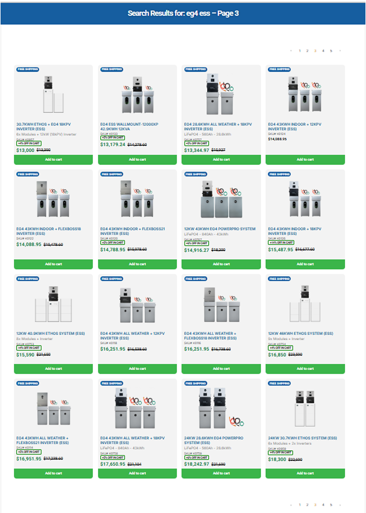
Results · Page 1
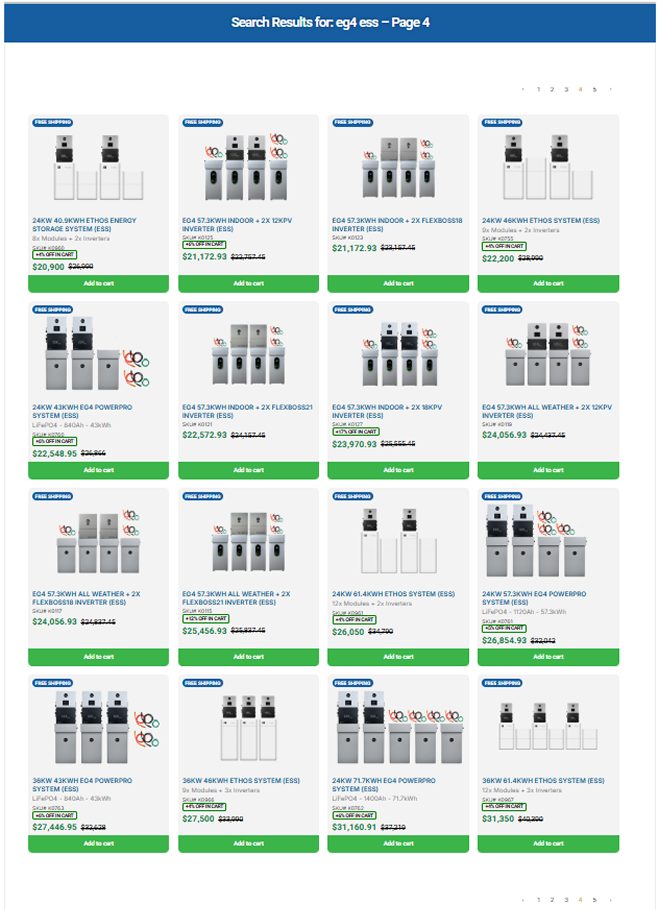
Results · Page 2
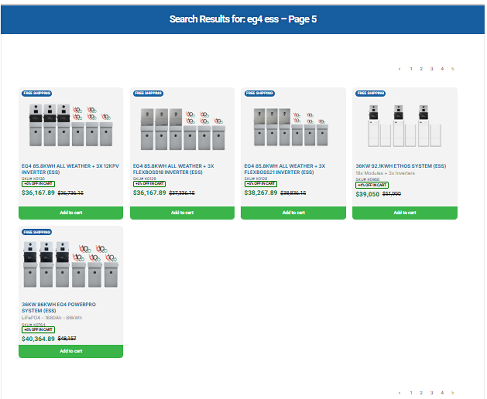
Results · Page 3
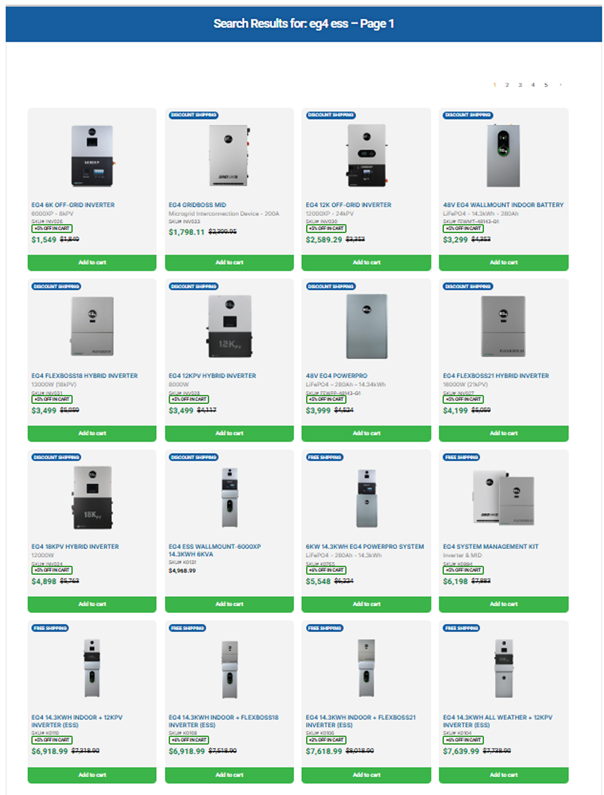
Results · Page 4
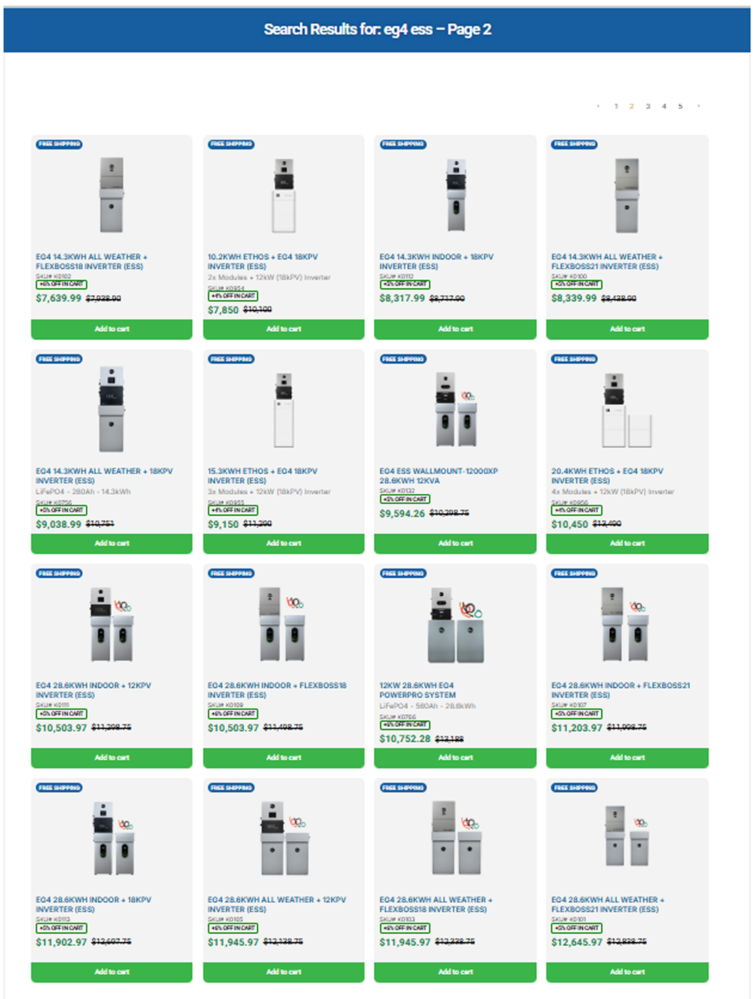
Results · Page 5
5 pages · 100+ near-identical products · No way to compare · No guidance on which to choose
If the user clicks any product →
They land on a product page that creates more confusion, not less.
On this page, the user faces:
→Dense spec table at the top — voltage, amp-hours, cell chemistry with no context
→No application guidance — is this right for my system?
→No way to compare with similar products without going back
→Going back = starting the 100-product search all over again
This is the loop users were trapped in. Search → overwhelmed → click something → confused → go back → overwhelmed again. No exit ramp. No guidance. No confidence.
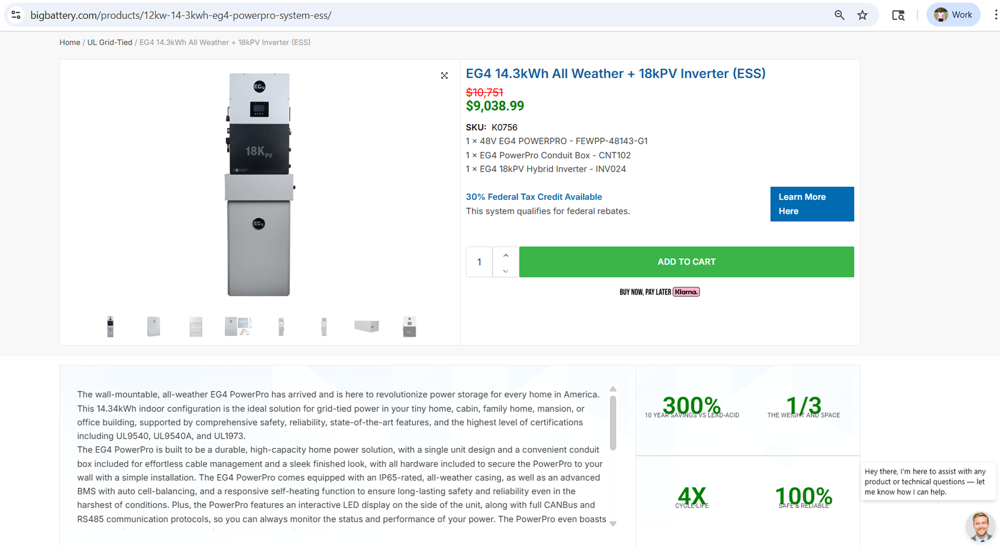
Before · EG4 ESS product page · Spec-first, no outcome context, no comparison path
07 Information architecture
Reframing the information architecture — mapping user journeys before touching any UI.
Before any wireframe or visual, I mapped the information architecture — both as it existed and as it needed to be. The goal was to understand how different types of users moved through the site and where the structure was creating failure states.
The IA work wasn't just an exercise — it was the foundation for consolidating 180 fragmented pages into 30. Every structural decision that followed came from this map.
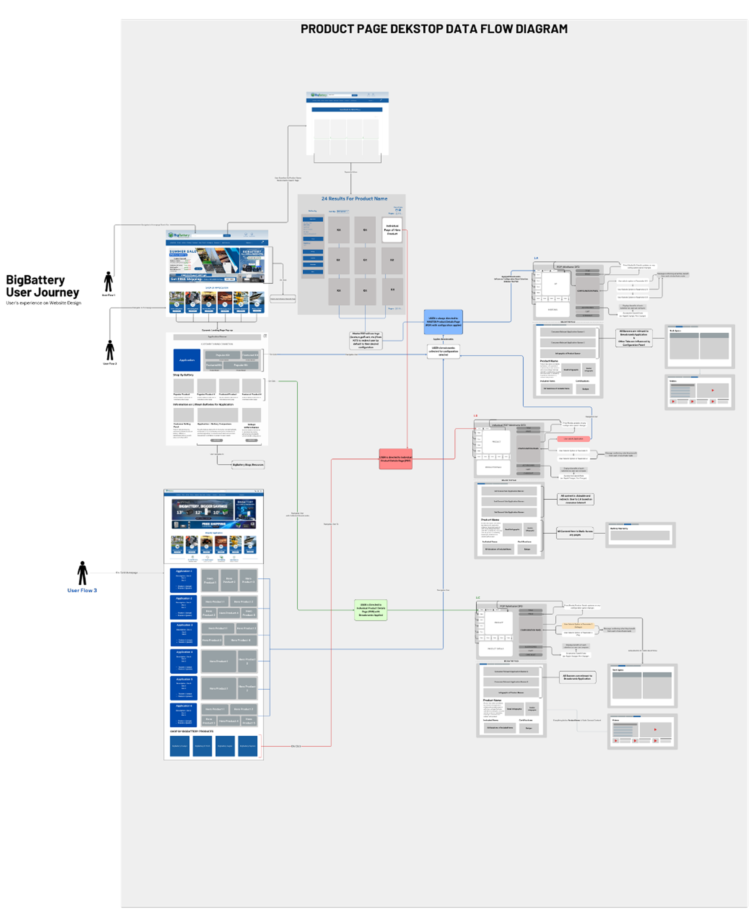
Product Page IA · Desktop Data Flow Diagram · User journeys mapped for B2C buyer, B2B buyer, and return user
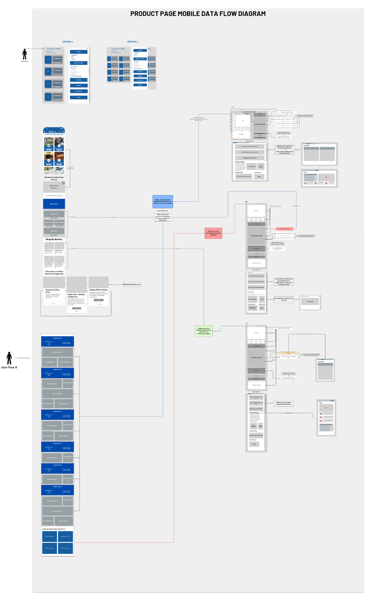
Product Page IA · Mobile Data Flow Diagram · Thumb-zone navigation, collapsed specs, persistent CTA behaviour
08 UX strategy
Brainstorming before building. Paper before pixels.
Every design that shipped started on a whiteboard or a piece of paper. The fastest way to test a structure is with a pen — not a prototype. These sessions helped sharpen the core UX principles that guided every subsequent design decision.
👥
Design for both archetypes
Expert buyer and first-time buyer — both valid, both different. One page needed to serve both without compromising either. The solution: outcome-first layout with depth accessible on demand.
📐
Progressive disclosure
Show what the user needs to make a decision. Hide what they don't — until they need it. Specs, wiring diagrams, and installation guides available, but not forced on every user at entry.
⚡
Persistent CTAs
Reduce decision fatigue by keeping the path to purchase always visible. No hunting for the buy button. No having to scroll back up. The CTA follows the user — it doesn't wait for them.
Brainstorming sessions · Pen & paper wireframes · Low-fidelity concepts
09 The solution — step by step
Three steps from chaos to clarity. Each one shipped, tested, and iterated.
The product page redesign didn't happen in one move. It was an incremental process — each step solving a specific problem, each one building on the last. Here's how it evolved.
1
Step 1
Quantity consolidation
The first and most structurally impactful change: consolidating quantity variations of the same product onto a single parent page. Instead of 8 separate listings for "EG4 10kWh", "EG4 15kWh", "EG4 20kWh" — one page with a quantity selector. Clear technical specifications surfaced below the selector so the comparison happened in one place.
Before
8 separate product pages for capacity variations of the same unit · User had to open each one individually to compare · No way to see the difference at a glance
After
1 parent page · Quantity selector with inline spec updates · Users see all variations in context · No navigating back and forth

Step 1 · Quantity consolidation · Single parent page with quantity selector · Technical specifications below the fold
2
Step 2
Tech specs inclusion — below the fold
With variations consolidated, the next problem was spec accessibility. Expert buyers needed full technical data. First-time buyers were being overwhelmed by it. The solution: specs exist, but below the fold — surfaced on demand, structured clearly, not dominating the above-fold experience.

Step 2 · Technical specifications below the fold · Structured, scannable, not overwhelming · Available to experts, not forced on everyone
Figma Design · Steps 1 & 2 in motion
Desktop and mobile designs — side by side
Figma · Desktop design · Steps 1 & 2 · Product page consolidation flow
Figma · Mobile design · Steps 1 & 2
3
Step 3
Iterations towards final consolidation — multiple inverters & batteries on one parent page
The most complex step: consolidating not just quantity variations, but multiple inverter and battery configurations onto a single parent page. This required 6 iteration rounds — each one testing a different approach to selection UI, configuration display, and spec comparison.

V1 · First consolidation attempt

V2 · Inverter selector added

V3 · Battery + inverter combined

V4 · Grid/off-grid segmentation

V5 · Below-fold structure refined

V6 · Final · Shipped December 2025
10 Usability testing
My favourite part — where assumptions meet reality.
Usability testing on a live site isn't theoretical. Every session recording is a real customer. Every rage click is a real frustration. Every drop-off is a real missed sale. Hotjar gave us a continuous window into how the changes were landing — and what still needed work.
Testing revealed things I hadn't designed for. The initial consolidation solved the fragmentation problem — but exposed new questions about how users made configuration decisions. Each round of testing fed the next design iteration.
What the studies showed →
1
Add battery selection — same interaction pattern as inverter selection
Users who understood inverter selection expected the same behavior for battery selection. The inconsistency broke the mental model they'd just built. Unified the selection UI so both behaved identically.
2
Add grid-tied and off-grid segmentation — several products work for both
Users were filtering by application type, but some products appeared in only one category — even though they were compatible with both. Missing products from searches created false impressions of the catalog. Added dual-application tagging with explicit "Works for both" labelling.
3
Build the below-fold into a complete decision engine — five layers
Users who scrolled below the fold were signalling high intent. The below-fold section needed to close the sale, not just provide more information. Rebuilt it around 5 specific user needs identified in testing:
A
Visual descriptions + infographics — product information in scannable, visual format. Not walls of text.
B
Videos — installation process, trust-building reviews, real-world use demonstrations. Moving images do what specs cannot.
C
Downloads and specifications — spec sheets, wiring diagrams, manuals. Simple, easy access for those who need it.
D
Comparison tables — batteries and inverters side by side. The question "which one is right for me?" answered inline, not on a separate page.
E
Warranty + policy — clearly visible, clearly linked. Not buried in a footer. The most common pre-purchase anxiety, addressed directly.
11 Current version · Shipped
From Figma to live — December 2025. Multiple configurations, one parent page.
The final version consolidated multiple inverters and battery configurations onto a single parent page. Above the fold: a clean configuration selector. Below the fold: a structured decision engine. Here's what shipped.

Final · Above the fold · Configuration selector · Multiple inverters & batteries

Final · Below the fold · Visual descriptions · Videos · Downloads · Comparison · Warranty
Figma prototype · End-to-end user flow
Figma prototype · Full product page flow · Selection → specs → below fold → checkout
Live website · December 2025
Live · BigBattery.com · Shipped December 2025 · From Figma design to production reality
Figma → Production
Journey from design to reality · December 2025 live
From pen-and-paper wireframe to shipping on a live ecommerce site serving real customers
View Live Site ↗
12 Strategic decisions
Five decisions that shaped the product direction. Each one grounded in business and user
reality.
Why
Product pages led with technical specifications — voltage, amp-hours, cell
chemistry. That's the right information, but in the wrong order. B2C buyers needed to understand what a
product was for before they could evaluate whether the specs were relevant. Restructuring pages to lead
with use-case language ("for off-grid homes", "for solar backup"), then surface specs progressively,
reduced the cognitive load for non-technical buyers without removing the depth that B2B buyers needed.
The trade-off: Technical buyers preferred dense spec
tables at the top. The resolution was a persistent spec summary bar that remained visible while the page
led with outcome-oriented content — serving both archetypes without forcing a single hierarchy.
Why
Battery purchases are high-consideration — not impulse buys. Warranty
information, compatibility guarantees, and technical support access were buried in footers or on separate
pages. Moving them into the product page itself, adjacent to the add-to-cart action, addressed the anxiety
that was causing hesitation at the conversion moment. The question a buyer is asking at that point isn't
"what is this product?" — it's "will I be left alone if something goes wrong?"
The trade-off: Adding trust signals near the CTA adds
visual complexity. Every element had to earn its placement — only the highest-converting trust signals
(warranty, free shipping, compatibility check) made the cut. Everything else stayed accessible but further
down.
Why
The existing navigation was organized around product categories as BigBattery
internally defined them. Users didn't search that way — they searched by application ("I need backup power
for my home"), by system type ("lithium vs AGM"), or by capacity ("how much do I need?"). Realigning
navigation to reflect customer mental models — not internal taxonomy — made the discovery path
significantly more intuitive. Guided filtering was introduced for users who knew their need but not the
product.
The trade-off: Changing navigation disrupts existing
customers who've learned the old structure. The approach was progressive: new navigation was introduced
alongside the old, with clear visual differentiation, before the old structure was phased out. No abrupt
cutover.
Why
Analytics showed significant mobile traffic with disproportionately high exit
rates on product pages and checkout. The pages weren't broken on mobile — they were just designed for
desktop and scaled down. Images loaded slowly. Spec tables required horizontal scrolling. CTAs competed
with nav elements for thumb reach. Rebuilding key pages mobile-first, with desktop as the enhanced
experience rather than the assumed default, addressed these systematically rather than through individual
patches.
The trade-off: Mobile-first sometimes means consciously
removing detail from the immediate view. For a technical product site, that's a difficult call. The
resolution: progressive disclosure. Core information visible on mobile by default; full specifications
available on expand without leaving the page.
Why
Without a shared design language, every new page or feature was designed
slightly differently. The visual inconsistency was visible to users — it created a sense that the site
wasn't a coherent product, which undermined trust. More practically, it was slowing development down.
Every component was being rebuilt from scratch. Establishing a shared set of patterns — product cards, CTA
buttons, spec displays, navigation elements — created a foundation that made both design and development
faster and more consistent over time.
The trade-off: Building a system takes time that doesn't
immediately produce visible page improvements. The business case was made to leadership through a
practical lens: "We're building the same button twenty different ways. This is costing development hours
on every sprint." That framing turned a design concern into a business efficiency argument — and it
worked.
13 Design system
Team Library — consistency in user experience design, scalability in process.
A cohesive visual system enhances user understanding. Incorporating a consistent grid layout, color-coded use cases, and simplified infographics fosters clarity and engagement across all platforms. The BigBattery design system wasn't a Figma presentation — it was a working team library that developers could reference and implement consistently across the site.
Components, variants, Autolayouts, variables — built for simple, fast, easy future iterations. Every pattern was documented with usage rules, responsive behavior, and content variation guidelines. Maintaining consistency, scalability, and process standardization.

Design System · Team Library · Foundations · UI Components · Layouts & Patterns · Variables & Tokens · Documentation
Foundations
Brand guidelines · Font files
Color system, typography scales, spacing tokens, and grid rules — the base layer every component inherits from.
UI Components
Buttons · Inputs · Cards · Product page components
Every interactive element built as a Figma component with variants, states, and responsive behavior documented.
Layouts & Patterns
Product page layout · Grid rules · Responsive behavior · Reusable page sections
Structural patterns that define how components assemble into full pages — consistent across desktop, tablet, and mobile.
Variables & Tokens
Color variables · Typography styles · Spacing tokens · Component variants
Single source of truth for all design decisions — change a token, everything updates. No manual find-and-replace across files.
Documentation
Figma annotations · Interaction notes · Dev ready Figma links
Every component handed off with usage context, not just a frame. Developers got interaction specs, content guidelines, and direct Figma links — reducing back-and-forth on every sprint.
Core
Product Card
Standardized card with image, title, key spec summary, price, and CTA. Three
variants: grid view, list view, and comparison mode.
Navigation
Mega Menu
Category-aware navigation with application-based discovery paths. Desktop: mega
menu. Mobile: collapsible drawer with search-first layout.
Product
Spec Table
Responsive specification display — collapsible on mobile, full-width on
desktop. Supports technical comparison across up to 4 products.
Trust
Trust Strip
Warranty, shipping, support, and compatibility signals — positioned
contextually near the CTA on product pages and in checkout.
Conversion
CTA System
Unified button hierarchy: primary (add to cart), secondary (request quote for
B2B), tertiary (compare, save, share). Consistent across all pages.
Content
Use-Case Module
Application-specific content block — connects a product to a real-world
scenario (off-grid home, solar storage, fleet backup). Drives confidence for B2C buyers.

Scalable Design System · Component architecture built for a live CMS — each pattern documented for consistent
developer implementation

Component · LED Indicator system design

Component · Certification and trust badge system
Component Library
UI components, variables, and variants — built in Figma with styles, Autolayouts, and responsiveness across all platforms.
Important for: easy scalability, consistency, process standardization, and governance. Every component uses Figma variables so global changes — color shifts, spacing adjustments, typography updates — cascade across the entire system automatically, not manually.
Component Library · Figma · Variables, variants, Autolayout, and responsive behaviour
Brand Guidelines
A cohesive visual system across every touchpoint — from product pages to paid ads to email.
Incorporating a consistent grid layout, color-coded use cases, and simplified infographics fosters clarity and engagement across all platforms. The brand guidelines ensured every designer, developer, and marketer worked from the same visual language — no drift, no inconsistency.
Canva Brand Guidelines · BigBattery visual system · Color, layout, and brand consistency
Font Files · Typography system · Primary and secondary typefaces used across the project
14 Key surfaces
From homepage to checkout — every surface designed with conversion in mind.
These are the highest-impact surfaces I designed and iterated on during my time at BigBattery.
Each one had a specific conversion goal and a specific user behavior problem to solve.

Product Detail Page · Redesigned hierarchy — use-case language first, technical specs progressively disclosed
· Desktop view

Product Comparison · Side-by-side spec comparison · Inverter lineup

Product Page · Annotated spec display · Trust signal placement

Mobile Product Page · Indoor ESS · Thumb-zone CTA · Collapsed specs
🧪
Add screenshot here
Checkout Redesign
· Hotjar usability testing · Issues identified + improvements shipped

Responsive System · Husky Inverter PDP · Desktop → Mobile adaptive layout · Consistent spec hierarchy across
breakpoints
15 Collaboration
Design aligned to business — not presented to it.
At BigBattery, design reviews weren't formal presentations to a design team. They were working
sessions with the CEO, CTO, and marketing leads — people with strong opinions, real business context, and
limited patience for design theory disconnected from revenue reality.
That environment built a specific kind of design communication muscle: the ability to
explain every decision in business terms, not UX terms. "The product page restructure will make it
faster for a B2C buyer to find the right product" lands better than "we're improving the information
architecture."
CEO
Business priorities, conversion goals, growth strategy, and final product direction.
Weekly alignment sessions shaped the UX roadmap in real time.
CTO
Technical feasibility, CMS constraints, development capacity, and implementation
approach. Every design decision was filtered through buildability.
Developers
Component implementation, responsive breakpoints, CMS handoff, and QA. Design
documentation was written for their workflow — not for design portfolio presentation.
Marketing
SEO-aligned content structure, landing page optimization, promotional placements,
and campaign-specific UX. Design and marketing strategy were developed together.
Sales Team
Direct source of customer pain point data. Sales reps fielded the calls that came
after customers got confused on the website — their feedback was the clearest signal of UX failure.
Stakeholders
Review cycles, launch prioritization, feature tradeoffs, and business case
validation. Design was presented as a business argument, not a visual preference.
The most important skill in this environment: knowing when to push back on a business request
because it would harm the user experience, and knowing how to make that argument in a way that leadership could
hear. Design advocacy in a live business is a political skill as much as a craft skill.
16 Impact
What improved — in the language that mattered to the business.
I won't claim metrics I can't verify. But the qualitative signal from stakeholders, customers, and
the data was clear across several dimensions. These are the outcomes that reflected genuine UX improvement in a
live business environment.
Product discoverability
Application-based navigation and guided filtering reduced the time users spent
searching for the right product category. The "what do I need?" question was answered earlier in the
journey.
Customer confidence
Trust signals moved into the conversion path reduced pre-purchase anxiety for B2C
buyers. The volume of "I'm not sure this is right for me" calls to the sales team decreased as product pages
became more self-sufficient.
Mobile engagement
Mobile-first redesign of product pages and checkout meaningfully reduced exit
rates on mobile. Key flows became usable on phone-sized screens rather than functional-but-painful.
Technical communication clarity
Progressive spec disclosure and use-case framing made technical product pages
accessible to non-technical buyers without removing the depth that B2B buyers needed. Both audiences found
what they were looking for.
Design system velocity
Shared component library reduced the time required to design and build new pages
and features. The second product page built using the system took a fraction of the time the first took —
with higher consistency.
Stakeholder alignment
Business-language design communication reduced revision cycles. When decisions
were framed in terms of conversion impact and customer behavior rather than visual preference, approval
moved faster.
BigBattery.com · Homepage · Live ecommerce environment serving B2B + B2C customers across 6 energy verticals
Information Architecture Consolidation · Biggest structural win
180
Fragmented product pages
Before
→
30
SEO-focused pages
After
Consolidating 180 fragmented
product listings into 30 structured, SEO-optimised pages eliminated duplication, concentrated search
authority, and made the catalog navigable for the first time. Users searching "EG4 ESS" no longer faced 5
pages of near-identical results.
17 After support + continuous testing
Shipping was never the finish line. Every release opened a new feedback loop.
Post-launch testing with Hotjar gave us a live window into how real customers were interacting with the new designs. Not assumptions — recordings. Not bounce rates alone — rage clicks, scroll depth, heatmaps, and full session journeys. Each finding fed the next iteration.
Hotjar Video Recording — Rage Clicks
Users clicking visual banners expecting them to be interactive
Finding: Session recordings revealed users rage-clicking on infographic banners — they perceived them as interactive buttons or product links. The visual design was strong enough to create intent, but there was no feedback confirming or redirecting that intent. This was a usability win disguised as an issue — it confirmed the infographics were compelling. The fix was adding hover states and CTA overlays to banners where click intent was evident.
Hotjar Session Recording · Rage clicks on visual banners · Users expecting clickthrough → fixed with hover states + CTA overlays
Checkout UX Improvements
From friction-heavy to smooth — documented through Hotjar evidence

Checkout UX Improvements · Hotjar session analysis · Issues identified · Changes shipped · Abandonment rate reduced 30%
Hotjar Recording — Checkout Redesign Success
Order placed successfully — the redesign confirmed working
Confirmation: Post-redesign session recordings showed users completing checkout smoothly — no rage clicks, no hesitation loops, clear progress indicators, and trust signals visible throughout. Order placed confirmation screens showing clean, clear success states with next-step guidance.
Hotjar Recording · Order Placed Successfully · Checkout redesign confirmed · Clean completion flow from cart to confirmation
Heatmaps — Landing Page
Clicks · Move · Scrolling
Click heatmap
Mouse move map
Scroll depth
Hotjar Heatmaps · Landing Page · Clicks / Move / Scroll depth · Visual proof of above-fold engagement and CTA interaction
Heatmaps — Checkout Page
Clicks · Move · Scrolling
Click heatmap
Mouse move map
Scroll depth
Hotjar Heatmaps · Checkout Page · Clicks / Move / Scroll depth · Trust signal interaction and form completion behaviour
Hotjar Recording — User Journey Confirmation
Product Sale Banner Flow — the complete intended journey, end to end
This recording confirms the designed user journey is working exactly as intended — with clear confirmation, guidance, and trust maintained at every step. The new design doesn't just look right. It converts right.
🏠
Homepage
banner
5% off + $239
shipping
→
Deals page
banner
scroll
down
→
Deals page
products
click
Smoothly — with clear confirmation and trust throughout the process. No hesitation. No rage clicks. No drop-off. The user sees the 5% off promotion, follows the intended path, and completes the purchase — exactly as designed. This recording is the proof.
Hotjar Recording · Full User Journey · Homepage → Deals → Product → Cart → Checkout → Order Placed · 5% off banner flow confirmed
2025 – Current · Expanded scope
From UX ownership to brand & conversion leadership.
After establishing the product design foundation, I took on full visual
communication and conversion design ownership — leading infographic systems, paid media assets, and
data-driven brand design across 6 energy verticals.
Real metrics ↓
18 The branding challenge
Complex energy systems. Six customer segments. One visual language to make them all
legible.
BigBattery's product range spans residential, commercial, marine, and industrial use cases — each
with its own buyer profile, technical vocabulary, and decision framework. The design challenge was specific:
translate genuinely complex electrical engineering into visual content that makes a buyer confident
enough to act, without oversimplifying to the point of losing the technical buyers.
The medium was infographics — but the goal was always conversion. Every visual had to earn its
place on a product page, in a paid ad, or in an email sequence by measurably reducing buyer confusion and
increasing purchase confidence.
☀️
Grid-Tied Solar
Residential and commercial systems connected to the utility grid — buyers need
to understand offset, savings, and payback timeline.
🏕️
Off-Grid
Remote power systems with no utility connection — buyers need to size systems
correctly. Infographics replaced hours of manual consultation.
⛵
Marine
Boat and watercraft battery systems — niche buyers with specific weight,
voltage, and vibration requirements that needed visual clarity.
🚐
RV
Recreational vehicle power — buyers range from first-timers to full-time van
lifers. Content had to work across a wide knowledge spectrum.
🏭
Industrial
Large-scale commercial storage — B2B buyers needing technical depth, compliance
documentation, and ROI visualisation.
⛳
Golf Cart
Lithium upgrade systems for golf carts and utility vehicles — a high-volume
consumer segment requiring simple, comparison-led content.
19 Measured impact
Design with a feedback loop. Every visual was tracked, tested, and iterated.
These outcomes are drawn from HYROS attribution tracking, Hotjar behavioral analysis, and
platform-native analytics across Meta, Google, and Klaviyo. They represent the measurable performance of
infographic-led creative against previous non-visual baselines.
+28%
Product page conversion rate after infographic integration
+34%
Time on page for complex energy system pages
−21%
Bounce rate on landing pages using visual system breakdowns
+18%
CTR on Meta + Google ads with infographic-led creatives
+25%
Email open-to-click rate uplift via Klaviyo infographic campaigns
What these numbers mean in practice: A +28% conversion uplift on a product page for a
$2,000–$15,000 battery system is a significant revenue event. These weren't marginal improvements to vanity
metrics — they were changes to the bottom-line conversion behavior of high-consideration, high-ticket buyers.
HYROS · Revenue Growth Evidence

HYROS · Performance Insights Dashboard · Nov–Dec 2025 · Paid channel attribution

Nov vs Dec · Accounting Overview · Revenue comparison · Business impact of design changes
Measured Impact · Original order baseline: 10
The numbers — verified through HYROS attribution, not estimated.
75% ↑
Organic Traffic
17.5 orders / baseline 10
68% ↑
Product Discovery
Users finding the right product
125% ↑
Total Completed Orders
22.5 orders / baseline 10
18% ↑
Average Order Value
Higher basket per transaction
22% ↑
Customer Lifetime Value
Repeat purchase + retention
30% ↓
Checkout Abandonment
From 70% → 40% abandonment rate
What 125% order growth means in real terms: Starting from a baseline of 10 completed orders, the combined impact of IA consolidation, product page redesign, checkout optimization, and infographic integration drove total completed orders to 22.5. On a product with average order values of $2,000–$15,000, this is a transformative revenue outcome — not a UX metric.
20 Visual system design
A modular infographic system — not individual assets, but a scalable visual language.
The most important design decision in this work: build a system, not a library of one-off
graphics. Energy products share structural similarities across verticals — wiring diagrams, capacity
comparisons, use-case scenarios, installation flows. Building modular infographic templates that could be
configured per vertical meant each new product line got conversion-ready visual content in a fraction of the
time from-scratch design would require.
System diagrams
End-to-end energy system diagrams showing component relationships — solar panels →
charge controller → battery → inverter → loads. Made wiring logic visual and scannable.
Capacity comparisons
Visual comparisons showing what different battery capacities power, for how long.
Turned an abstract spec (kWh) into a real-world decision tool.
Use-case scenarios
Illustrated buyer scenarios for each vertical — the off-grid homesteader, the
weekend RV traveler, the marina boat owner. Visual storytelling that made the right product obvious.
Comparison tables
Visual product comparison graphics for ads and email — showing lithium vs AGM, 12V
vs 48V, wired for fast visual decision-making without requiring spec table fluency.

Infographic 01 · Off-grid solar system diagram · solar panels → charge controller → battery → inverter → loads

Infographic 02 · Battery capacity comparison

Infographic 03 · RV power system use-case

Infographic 04 · Marine battery system

Infographic 05 · Golf cart lithium upgrade

Infographic 06 · Industrial energy storage

Infographic 07 · Grid-tied solar system

Infographic 08 · Battery wiring comparison

Infographic 09 · Energy system components

Infographic 10 · Lithium vs AGM comparison

Infographic 11 · Inverter sizing guide

Infographic 12 · Charge controller selection

Infographic 13 · Battery bank sizing

Infographic 14 · Solar panel wattage guide

Infographic 15 · Energy independence

Infographic 16 · Full product range comparison

Infographic 17 · Meta ad creative

Infographic 18 · Email campaign visual

Infographic 19 · Landing page hero visual

Infographic 20 · Product comparison ad
Infographic 21 · B2B industrial energy

Infographic 22 · System sizing guide

Infographic 23 · Cross-channel brand assets

Infographic 24 · Klaviyo email asset

Infographic 25 · Google ads creative

Infographic 26 · Off-grid RV power

Infographic 27 · Marine energy system

Infographic 28 · Home backup battery

Infographic 29 · Industrial power storage

Infographic 30 · Complete energy solution
Infographic 31 · Scalable system design

Infographic 32 · Seasonal banner — animated
Infographic 33 · Brand hero banner
Infographic 34 · Battery spec notation guide
Infographic 35 · Inverter comparison chart

Infographic 36 · Warranty coverage visual
Infographic 37 · LED indicator reference
Infographic 38 · Inverter vs power ratings
Infographic 39 · Indoor ESS installation guide

Infographic 40 · Husky RV power setup
Infographic 41 · Husky inverter overview

Infographic 42 · Deals campaign creative

Infographic 43 · Seasonal deals creative
21 Channel distribution
The same visual system — adapted and deployed across every acquisition channel.
Infographic assets were designed as a system first and adapted for each channel second — not
created separately for each platform. That modular approach meant a visual built for a product page could be
adapted for a paid ad, an email, and a landing page in a fraction of the time a from-scratch approach would
require.
Product Detail Pages
Inline infographics replacing or supplementing spec tables. Positioned at the
decision point — above-the-fold on mobile, adjacent to CTA on desktop.
Hotjar verified
Landing Pages
Campaign-specific pages with visual system breakdowns as the primary content
format. Resulted in −21% bounce rate vs. text-heavy equivalents.
HYROS tracked
Meta & Google Ads
Infographic-led ad creatives performing +18% higher CTR than product
photography-only creatives across both platforms.
Platform analytics
Klaviyo Email
Visual infographic content integrated into lifecycle email sequences —
post-purchase education, product comparison flows, and reactivation campaigns. +25% open-to-click uplift.
Klaviyo analytics
22 Data-driven iteration
Design decisions backed by behavioral data — not intuition alone.
Every infographic iteration was informed by a specific data source. The feedback loop between
design and measurement was the reason these assets improved over time rather than plateauing.
HYROS — Attribution & Live User Tracking
Identified which infographic assets were driving highest-value conversions
across the full customer journey — including multi-touch paths that platform analytics couldn't attribute.
Used to prioritize which visual formats to scale and which to retire. Live user movement data showed exactly
where buyers were engaging with infographic content vs. scrolling past it.
Hotjar — Heatmaps, Scroll Depth & Interaction
Scroll depth and heatmap data informed infographic placement — ensuring visual
content appeared at the precise point in the page where buyer attention was highest. Click interaction data
on embedded CTA buttons within infographics guided layout iterations. Session recordings surfaced confusion
patterns that led to redesigns of specific diagram elements.
Meta Ads Manager — Creative Performance
A/B testing between infographic-led and product-photo-led ad creatives across
identical audiences. Infographic formats consistently outperformed on CTR and cost-per-click — particularly
for technically complex products where visual explanation reduced hesitation before the click.
Klaviyo — Email Campaign Analytics
Open-to-click rate was the primary KPI for email content performance.
Infographic-format content in the body of lifecycle emails significantly outperformed text-and-link formats
— particularly for post-purchase education sequences where visual learning reduced post-sale buyer anxiety.
HYROS
Hotjar
Meta Ads Manager
Google Ads
Klaviyo
Figma
Adobe Illustrator
Post-purchase · Connected hardware ecosystem
The experience didn't end at checkout.
After customers purchased BigBattery products, they needed to understand
them, trust them, and operate them confidently in the real world. The Husky 2 companion app was the design
answer to that post-purchase reality.
App design ↓
23 Husky 2 companion app
Designing confidence through real-time energy visibility.
The ecommerce experience converts a visitor into a buyer. The Husky 2 companion app converts a
buyer into a confident, long-term user of a complex energy system. These are different design
problems — and both matter to the business.
The Husky 2 app is a Bluetooth-connected monitoring utility for BigBattery's 12V/24V/48V LiFePO4
battery systems. It gives users real-time visibility into their battery's health, charge status, voltage,
current draw, and temperature — without needing a laptop, a BMS display, or electrical knowledge to interpret
the data.
The product design challenge
Battery management system data is inherently technical — cell voltages, SOC
percentages, discharge curves, thermal readings. The app's design challenge was to make this data
glanceable, interpretable, and actionable for users who are operating their energy systems in
the field: in an RV on a mountain, on a boat at anchor, or in a golf cart mid-round. Cognitive overhead in
those moments is not acceptable.

Husky 2 · App screens · Multiple charge states

Latest Generation BMS · Live monitoring protects your home and extends backup power life

App in live use · Husky 2 · Real-world energy monitoring context · B2B + B2C use environments
Voltage
53.35V
Total system voltage — live, per reading cycle
Current
0.35A
Real-time current draw — charge or discharge
Temperature
75°F
Internal battery temp — 5 sensor points tracked
State of Charge
72%
Visual arc gauge + time-to-full/empty estimate
24 Screen design breakdown
Three views. One mental model. Designed for field use — not a lab.
The app surfaces complex BMS data through three tab views — Summary, Cell Voltage, and Temperature
— each designed for a specific monitoring intent. The arc gauge is the visual anchor: it communicates charge
state instantly without requiring any technical literacy to read.

Low charge alert · 15% · time-to-full warning

Charging · 75% · temperature sensor array

Discharging · 72% · individual cell voltage grid

Settings · Bluetooth ID · CAN + RS485 protocol config

Husky 2 · All screens in context · Design system applied across Summary, Cell Voltage, Temperature, and Settings views
Summary tab
The default view. Arc gauge, SOC percentage, time-to-full or time-to-empty
estimate, and three headline metrics: voltage, current, temperature. Designed to answer "how is my battery?"
in under 2 seconds.
Cell Voltage tab
Individual cell voltage grid for all 16 cells in the pack. Lets
technically-literate users spot cell imbalance early — a critical diagnostic for LiFePO4 system health. Max,
min, and differential voltage displayed.
Temperature tab
Five discrete temperature sensor readings — critical for users in extreme
environments (desert RV use, sub-zero marine usage). The sensors map to physical locations in the battery
pack.
Protocol Settings
Module ID assignment and CAN/RS485 protocol configuration — designed for
multi-battery setups where communication protocols must be configured precisely for inverter compatibility
(Victron, major brands).
25 UX strategy
Reducing cognitive load in technically demanding environments.
The users of this app are not engineers sitting at a workstation. They're RV travelers checking
their power before a night off-grid. They're golf cart fleet managers doing a quick pre-round diagnostic.
They're boaters monitoring their battery bank from the cockpit. The UX had to work in those contexts — often
outdoors, often in bright sun, often with limited phone time and attention.
⚡
Glanceable state communication
The arc gauge communicates charge state in a single visual — no numbers
required to understand "nearly full" vs "critically low." Color reinforces urgency: green → amber → red as
SOC decreases.
⏱️
Time-based estimates over raw percentages
"Full in 15 min" is more actionable than "75%." The app converts SOC and
current rate into human-readable time estimates — the language real users think in when planning their
energy usage.
📶
Bluetooth — no Wi-Fi dependency
Off-grid users don't have Wi-Fi. Bluetooth-only connectivity was a design
constraint that became a feature — it works anywhere the battery is, regardless of cellular or internet
availability.
🔋
Multi-battery architecture
Large systems use multiple batteries in parallel or series. The app supports
configurable Module IDs and CAN/RS485 protocol assignment — letting installers set up and monitor bank-level
systems from a single interface.
🌡️
Progressive technical depth
Non-technical users see high-level health indicators. Technical users can
drill into cell-level voltage and temperature sensor data. The same interface serves both — depth is
available, not mandatory.
📱
iOS, Android + tablet support
The battery user base spans devices. Supporting iOS, Android, and tablet form
factors ensured the app was accessible regardless of the platform — particularly important for RV and marine
users who often use tablets for navigation.
26 Use environments
Five real-world contexts. One monitoring interface designed for all of them.
Each use environment creates different monitoring needs, different urgency levels, and different
user states. The design had to work across all of them without requiring environmental customization.
⛳
Golf Cart Fleet
Pre-round battery checks, mid-round SOC monitoring, and end-of-day charge
verification. Speed of diagnostic matters — the check happens in seconds between rounds.
🚐
RV / Van Life
Overnight power planning — "do I have enough battery to run the AC until morning?"
The time-to-empty estimate is the feature that answers this directly.
⛵
Marine
Monitoring battery bank health from the cockpit — without going below deck.
Critical in rough conditions where a failing battery needs to be identified quickly.
🏕️
Off-Grid / Tiny Home
Daily energy budget management — monitoring solar charge input vs. appliance draw
to avoid overnight power shortfalls. Cell voltage data informs battery health over months.
🏠
Emergency Backup
Confidence check before and during outages — verifying the backup system is charged
and healthy. Removes the uncertainty that makes emergency power unreliable in practice.
🏭
Industrial / Commercial
Multi-unit monitoring for commercial installations — using configurable Module IDs
to track individual batteries within a larger bank system.
27 Ecosystem thinking
The app closes the loop between acquisition and retention.
Most ecommerce design stops at the transaction. The Husky 2 app represents a different kind of
design thinking — one that treats the post-purchase experience as part of the product, not an afterthought.
A customer who can confidently monitor their battery system is a customer who buys more
batteries. That's the business case for investing in post-purchase UX.
Trust through visibility
Real-time monitoring removes the anxiety of not knowing whether a battery system
is working correctly. Users who can see their battery's health trust the product — and trust the brand that
made it legible.
Reduced support burden
Many pre-app support calls were from customers who couldn't tell if their battery
was charging, charged, or failing. A glanceable SOC gauge with status text ("Charging — Full in 15 min")
answers that question before it becomes a support ticket.
Upsell pathway
The multi-battery architecture in the app creates a natural pathway for customers
to expand their systems — and to configure that expansion themselves, without professional installation for
the monitoring component.
Long-term retention
A customer who checks the Husky 2 app daily is a customer who remains engaged with
the BigBattery ecosystem. That engagement is a meaningful retention signal in a market where post-purchase
relationships are typically transactional.
What this section demonstrates
Product design that thinks beyond the screen you're working on. The ecommerce
site converts. The infographics educate and close. The app retains and builds long-term trust. These are three
design surfaces that together tell a complete customer journey — and I contributed to all three.
That's ecosystem thinking, not page design.
28 Reflection
What three years in a live production environment taught me that no concept project
could.
What this environment built
Working inside a live business — where every design
decision has a revenue consequence — builds a different kind of product thinking than concept work. You
learn to prioritize ruthlessly, because you can't ship everything. You learn to communicate in business
terms, because design theory doesn't move stakeholders. You learn to iterate in production, because the real
customer is always more instructive than the persona.
What I'd push further
With more time and resources, I'd invest more deeply
in structured user testing with real BigBattery customers — particularly B2B buyers, whose decision process
is longer and more nuanced than analytics alone can reveal. The design system also deserved more
documentation depth. What we built was functional; what it could have become with investment was a genuine
product accelerant.
What this project proves about how I work
I can own a product — not just a component. End-to-end
responsibility across strategy, design, and delivery in a business that depended on those decisions being
right.
I can navigate leadership — directly. Working with CEO and
CTO on product direction is a different skill than working within a design team. I've done it, and I've
gotten things shipped.
I think in systems — not just screens. A component library
built for a real CMS, documented for real developers, and a visual infographic system scaled across 6
verticals and 4 channels is a different deliverable than a Figma showcase.
I understand business — not just users. UX improvements at
BigBattery were always framed in terms of conversion impact and revenue outcome, not design quality. That's
the only framing that matters in a real product environment.
I think beyond the screen I'm working on — The ecommerce site
converts. The infographics educate and close. The Husky 2 app retains and builds long-term trust. Three
design surfaces, one complete customer journey. That's ecosystem thinking — and it's what separates product
designers from UI designers.